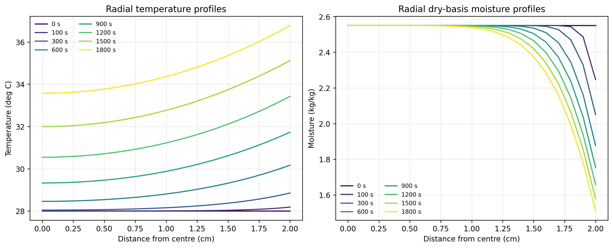
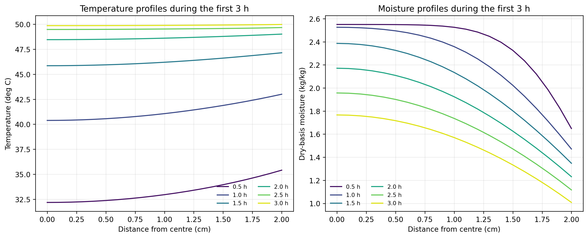
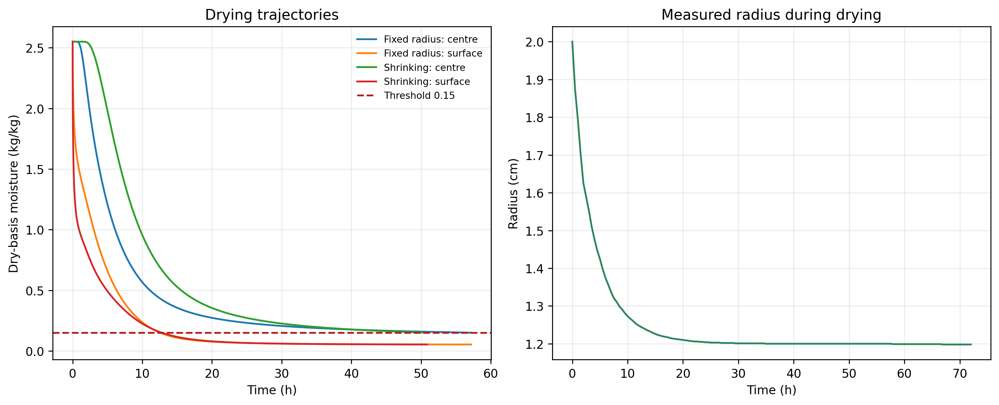

针对圆柱形药材在热风烘干过程中温度与干基含水率的时空演化问题，本文建立了轴对称一维径向传热—传质模型。首先，在不考虑轴向变化和体积收缩的条件下，根据能量守恒与质量守恒构造圆柱坐标下的耦合偏微分方程，并使用对流换热与表面对流传质边界刻画热空气对物料的作用。其次，针对温度、含水率相关的密度、比热容、导热系数和有效扩散系数，采用保守型有限体积法进行空间离散，使用隐式迭代推进时间；对长时间烘干阶段，则在附件空气参数结束后保持末值，以完成干燥终点预测。最后，在收缩情形下引入材料坐标，将变化区域映射到固定计算域，并同步更新传热、传质面积和单元体积。
计算表明：在定物性预热模型下，烘干 \(1800\,\mathrm{s}\) 后中心与表面温度分别为 \(33.5753\,{}^{\circ}\mathrm{C}\) 和 \(36.7856\,{}^{\circ}\mathrm{C}\)，中心与表面干基含水率分别为 \(2.5500\,\mathrm{kg/kg}\) 和 \(1.5102\,\mathrm{kg/kg}\)。采用变物性模型后，\(3\,\mathrm{h}\) 时中心温度达到 \(49.8495\,{}^{\circ}\mathrm{C}\)，中心干基含水率为 \(1.7662\,\mathrm{kg/kg}\)。不考虑收缩时，中心含水率首次降至 \(0.15\,\mathrm{kg/kg}\) 的理论时刻为 \(57.1724\,\mathrm{h}\)；考虑径向收缩后缩短至 \(50.8246\,\mathrm{h}\)，缩短约 \(11.10\%\)。网格加密结果表明关键输出对空间步长具有良好稳定性。
关键词：药材烘干；传热传质；非线性扩散；有限体积法；移动边界；收缩效应
An axisymmetric one-dimensional radial heat-and-mass transfer model is developed for a cylindrical medicinal material subjected to hot-air drying. The coupled conservation equations are solved with convective heat and mass-transfer boundary conditions. Moisture- and temperature-dependent density, heat capacity, thermal conductivity, and effective diffusivity are incorporated through a conservative finite-volume discretization and implicit time marching. For the shrinkage case, a material coordinate maps the moving radial domain onto a fixed computational interval, while the interfacial areas and control-volume volumes are updated consistently.
The computed center and surface temperatures after \(1800\,\mathrm{s}\) are \(33.5753\,{}^{\circ}\mathrm{C}\) and \(36.7856\,{}^{\circ}\mathrm{C}\), respectively, under the constant-property preheating model. With variable properties, the center temperature and dry-basis moisture content at \(3\,\mathrm{h}\) are \(49.8495\,{}^{\circ}\mathrm{C}\) and \(1.7662\,\mathrm{kg/kg}\). The theoretical center-drying time to \(0.15\,\mathrm{kg/kg}\) is \(57.1724\,\mathrm{h}\) without shrinkage and \(50.8246\,\mathrm{h}\) with radial shrinkage, corresponding to an \(11.10\%\) reduction. Grid-refinement tests confirm that the principal outputs are numerically stable.
Keywords: hot-air drying; heat and mass transfer; nonlinear diffusion; finite-volume method; moving boundary; shrinkage
研究对象为长度 \(L=25\,\mathrm{cm}\)、初始半径 \(R_0=2\,\mathrm{cm}\) 的圆柱形药材。初始温度为 \(28\,{}^{\circ}\mathrm{C}\)，初始干基含水率为 \(2.55\,\mathrm{kg/kg}\)。问题要求依次完成：定物性条件下 \(1800\,\mathrm{s}\) 内温度与含水率分布；变物性条件下 \(3\,\mathrm{h}\) 内的分布；预测中心含水率达到 \(0.15\,\mathrm{kg/kg}\) 的时刻；以及考虑径向收缩后的干燥过程与终点。
药材长径比为 \(L/(2R_0)=6.25\)。题目仅给出径向表面对流条件，并明确收缩时忽略轴向收缩，因此可将三维问题约化为一维径向问题。温度影响扩散系数，而含水率又影响热物性和扩散系数，故问题本质上是非线性耦合扩散系统。第四问进一步引入随时间变化的计算域。
| 符号 | 含义 | 单位 | 符号 | 含义 | 单位 |
|---|---|---|---|---|---|
| \(T\) | 物料温度 | \({}^{\circ}\mathrm{C}\) 或 \(\mathrm{K}\) | \(C\) | 干基含水率 | \(\mathrm{kg/kg}\) |
| \(r\) | 径向坐标 | \(\mathrm{m}\) | \(R(t)\) | 实时半径 | \(\mathrm{m}\) |
| \(\rho\) | 密度 | \(\mathrm{kg/m^3}\) | \(c_p\) | 比热容 | \(\mathrm{J/(kg\,K)}\) |
| \(k\) | 导热系数 | \(\mathrm{W/(m\,K)}\) | \(D\) | 有效扩散系数 | \(\mathrm{m^2/s}\) |
| \(h\) | 对流换热系数 | \(\mathrm{W/(m^2\,K)}\) | \(h_m\) | 表面对流传质系数 | \(\mathrm{m/s}\) |
| \(T_\infty\) | 空气温度 | \({}^{\circ}\mathrm{C}\) | \(C_\infty\) | 空气等效含水率 | \(\mathrm{kg/kg}\) |
| \(\xi\) | 材料坐标 | 无量纲 | \(t\) | 时间 | \(\mathrm{s}\) |
对半径为 \(R_0\) 的圆柱体取同轴环形微元，根据能量守恒得到：
轴心采用对称边界，侧表面采用第三类边界：
以干基含水率描述内部水分状态，采用 Fick 型有效扩散模型：
相应边界条件为：
初始条件为：
第一问采用定物性参数：
第二、三问采用附件给出的变物性关系：
第四问使用收缩药材物性：
第四问中，物理半径由附件曲线给定。引入固定域材料坐标：
对随材料运动的场量，径向扩散算子变换为：
数值实现中直接在每个时间步根据 \(R(t)\) 重算控制体体积和界面面积，从而保留守恒结构；外表面通量仍施加在 \(\xi=1\) 处。
将径向区间划分为 \(N\) 个同心环形控制体。第 \(i\) 个单元的单位长度体积和界面面积分别为：
以含水率方程为例，后向欧拉离散写为：
导热方程同理，只需将扩散系数替换为导热系数，并在时间项中乘以体积热容。界面物性采用相邻单元调和平均，表面对流条件直接作为边界通量写入最外层控制体。
每一时间层先使用上一层温度、含水率计算物性，再交替求解温度和水分的三对角线性系统，直至最大相对变化满足容差。第三、四问持续推进至中心单元含水率首次小于阈值 \(C_\mathrm{tar}=0.15\,\mathrm{kg/kg}\)。为降低离散时间造成的终点偏差，在跨越阈值的两个时间层之间进行线性插值：
正式提交的操作时刻则向上取整到整分钟，以保证达到而不是略早于目标含水率。
图 1 展示 \(100\,\mathrm{s}\) 至 \(1800\,\mathrm{s}\) 的径向分布。温度始终由表面向中心递增传播，早期中心几乎保持初温；含水率下降则高度集中在表层，体现出较强的内部扩散阻力。

| 时间 / s | 温度 / \({}^{\circ}\mathrm{C}\) | 干基含水率 / \(\mathrm{kg/kg}\) | ||
|---|---|---|---|---|
| 中心 | 表面 | 中心 | 表面 | |
| 100 | 28.0001 | 28.1801 | 2.5500 | 2.2470 |
| 300 | 28.0408 | 28.8488 | 2.5500 | 2.0508 |
| 600 | 28.4533 | 30.1652 | 2.5500 | 1.8770 |
| 900 | 29.3243 | 31.7304 | 2.5500 | 1.7547 |
| 1200 | 30.5427 | 33.4276 | 2.5500 | 1.6586 |
| 1500 | 31.9957 | 35.1203 | 2.5500 | 1.5787 |
| 1800 | 33.5753 | 36.7856 | 2.5500 | 1.5102 |
引入变物性后，温度升高会显著放大有效扩散系数，故中心水分在约一小时后开始明显下降。三小时末温度场已接近均匀，而含水率仍保持显著径向梯度，说明中后期干燥速度主要受内部传质控制。

| 时间 / h | 温度 / \({}^{\circ}\mathrm{C}\) | 干基含水率 / \(\mathrm{kg/kg}\) | ||
|---|---|---|---|---|
| 中心 | 表面 | 中心 | 表面 | |
| 0.5 | 32.1893 | 35.4131 | 2.5499 | 1.6486 |
| 1.0 | 40.3816 | 42.9976 | 2.5257 | 1.4711 |
| 1.5 | 45.8468 | 47.1400 | 2.3861 | 1.3476 |
| 2.0 | 48.4503 | 49.0034 | 2.1709 | 1.2311 |
| 2.5 | 49.4670 | 49.6609 | 1.9566 | 1.1166 |
| 3.0 | 49.8495 | 49.9664 | 1.7662 | 1.0081 |
空气附件序列在 \(14400\,\mathrm{s}\) 后以末值 \(T_\infty=50.165\,{}^{\circ}\mathrm{C}\)、\(C_\infty=0.04986\,\mathrm{kg/kg}\) 保持。中心含水率达到 \(0.15\,\mathrm{kg/kg}\) 的插值理论时刻为 \(57.1724\,\mathrm{h}\)。若以整分钟执行，应烘干至 \(57\,\mathrm{h}\,11\,\mathrm{min}\)。
| 时间 / h | \(r=0\) cm | \(r=0.5\) cm | \(r=1.0\) cm | \(r=1.5\) cm | \(r=2.0\) cm |
|---|---|---|---|---|---|
| 6 | 1.0156 | 0.9868 | 0.9006 | 0.7546 | 0.5335 |
| 12 | 0.4548 | 0.4418 | 0.4019 | 0.3289 | 0.1639 |
| 18 | 0.2979 | 0.2906 | 0.2679 | 0.2247 | 0.0842 |
| 24 | 0.2371 | 0.2321 | 0.2161 | 0.1851 | 0.0663 |
| 30 | 0.2053 | 0.2013 | 0.1887 | 0.1637 | 0.0597 |
| 36 | 0.1854 | 0.1821 | 0.1714 | 0.1501 | 0.0565 |
| 42 | 0.1717 | 0.1687 | 0.1593 | 0.1404 | 0.0547 |
| 48 | 0.1615 | 0.1588 | 0.1504 | 0.1332 | 0.0536 |
| 54 | 0.1535 | 0.1511 | 0.1433 | 0.1275 | 0.0528 |
| 57.183 | 0.1500 | 0.1477 | 0.1402 | 0.1249 | 0.0525 |
在材料坐标下求解后，中心达到目标含水率的理论时刻为 \(50.8246\,\mathrm{h}\)，整分钟操作时刻为 \(50\,\mathrm{h}\,50\,\mathrm{min}\)，此时半径约为 \(1.2\,\mathrm{cm}\)。相对于不收缩模型，理论干燥时间减少：
收缩缩短了水分由中心迁移到表面的实际距离，同时改变表面积与单元体积，因此终点提前。图 3 对两种模型的中心和表面含水率进行比较。

| 时间 / h | 中心 | \(r=0.5\) cm | \(r=1.0\) cm | 表面 |
|---|---|---|---|---|
| 6 | 1.7172 | 1.5357 | 1.0217 | 0.4217 |
| 12 | 0.7343 | 0.6518 | 0.4069 | 0.1667 |
| 18 | 0.4066 | 0.3668 | 0.2388 | 0.0889 |
| 24 | 0.2837 | 0.2599 | 0.1783 | 0.0671 |
| 30 | 0.2253 | 0.2085 | 0.1488 | 0.0593 |
| 36 | 0.1921 | 0.1790 | 0.1313 | 0.0558 |
| 42 | 0.1706 | 0.1598 | 0.1196 | 0.0539 |
| 48 | 0.1556 | 0.1463 | 0.1113 | 0.0529 |
| 50.833 | 0.1500 | 0.1412 | 0.1081 | 0.0525 |
分别对短时分布和长时间终点进行网格加密。第二问由 \(N=640\) 加密到 \(N=1280\) 后，关键温度最大差异为 \(8.88\times10^{-5}\,{}^{\circ}\mathrm{C}\)，关键含水率最大差异为 \(8.71\times10^{-7}\,\mathrm{kg/kg}\)。第三、四问的结果见表 6。
| 模型 | 粗网格 | 细网格 | 终点时间差 / h | 六小时剖面最大差异 |
|---|---|---|---|---|
| 第三问固定半径 | \(N=1280\) | \(N=2560\) | 0.0109 | \(2.27\times10^{-5}\) |
| 第四问收缩半径 | \(N=1280\) | \(N=2560\) | 0.00143 | \(2.70\times10^{-5}\) |
误差主要来自四方面：一是忽略端面导致长圆柱近似偏差；二是将水分迁移简化为单一有效扩散；三是未纳入蒸发潜热和表面结壳；四是空气序列末端采用常值外推。相比空间离散误差，上述模型结构与边界外推假设更可能影响最终干燥时间。
模型直接源于守恒定律，参数含义清楚；保守型有限体积法天然适配圆柱几何和第三类边界；同一套程序可通过物性函数切换完成四问；材料坐标避免频繁重构移动网格；网格收敛结果支持关键数值的稳定性。
当前模型未显式刻画水分相变潜热、材料各向异性和表面收缩应力。若获得实验数据，可进一步把 \(h\)、\(h_m\) 和扩散系数前因子视为待标定参数，用最小二乘或贝叶斯方法进行反演；还可扩展为二维轴对称模型以评价端面效应，并通过不确定性传播给出干燥终点的置信区间。
本文建立了圆柱药材热风烘干的一维径向非线性传热—传质模型，并通过有限体积法得到四问所需的温度、含水率分布和干燥时间。核心结论如下：
第一问计算脚本为 src/models/problem_a_01_preheat_pde_cc_v01.py；第二至四问计算脚本为 src/models/problem_a_03_full_drying_pde_cc_v01.py。官方结果文件位于 outputs/submissions/problem_a/，图表与诊断文件分别位于 outputs/figures/、outputs/tables/ 和 outputs/results/。模型采用确定性算法，不涉及随机采样。
数据与代码可用性：本研究数据来自赛题附件，代码、参数、诊断结果和正式结果表均随竞赛仓库保存。
作者贡献：请在提交前由三名队员按实际分工补充模型推导、程序实现、结果核验和论文写作贡献。
利益冲突与经费：本稿不存在商业利益冲突，未使用外部研究经费。
人工智能工具披露：本稿在代码实现、数值核验和排版整理过程中使用了生成式人工智能辅助。全部模型假设、参数口径、计算结果与最终文字应由参赛队员独立复核，并依据竞赛当届规则决定披露方式。